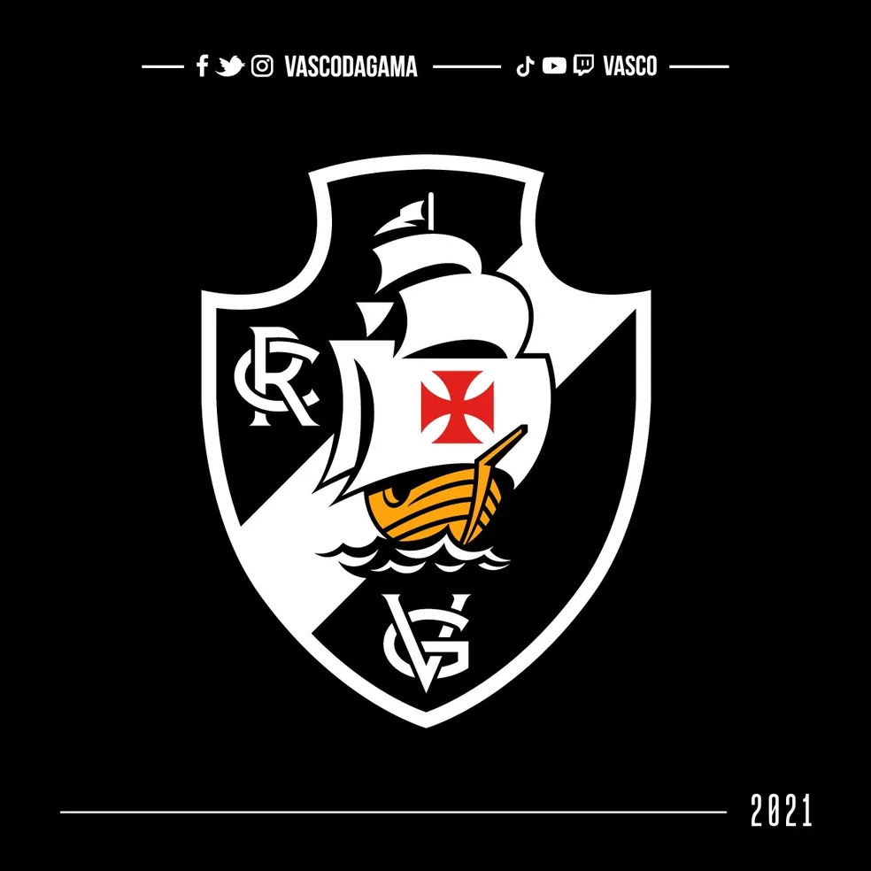

No primeiro jogo da final, no dia 12 de agosto, o Gigante venceu por 2 a 0, em São Januário, com gols de Donizete e Luizão. E, há 16 anos, no dia 26 de agosto de 1998, o Vascão venceu por 2 a 1, em Guayaquil, novamente com gols de Luizão e Donizete, conquistando, assim, a tão sonhada Libertadores da América.
O Vasco da Gama foi fundado no dia 21 de agosto de 1898. Surgia, então, uma instituição luso-brasileira constituída por homens simples, a sua maioria portugueses e brasileiros do comércio do Rio de Janeiro, mas com o brio e a bravura necessários para levar a recém-criada agremiação à tão almejada grandeza esportiva.
